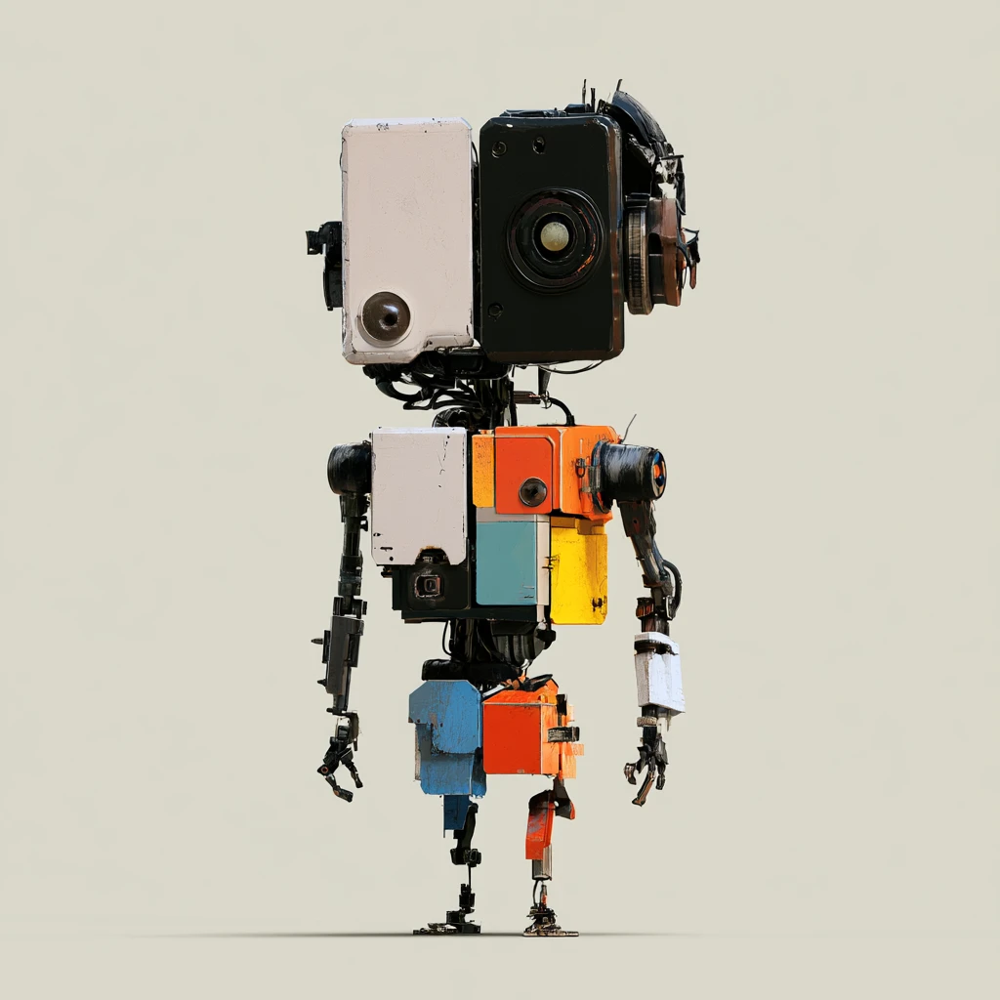

Box cameraObsolete 1974. Still sees.
Shutter plateJammed since 1980. Still reaches.
Hip housingScrapped as parts. Stands anyway.
Twin lensLast serviced 1968. Still focuses.
HeadphonesCord severed 1991. Still listens.
Drive bayUnreadable since 2003. Still holds.
Obituaries · for things that are not dead
Issue 001 · Page 22
Death notice · filed in error
Nothing here was built to go together.
Every piece of him was written off, and every notice was correct at the time. The camera in 1974, when film stopped being the point. The headphones in 1991, when the cord went. The drive in 2003, when nothing could read it anymore. Somebody carried each one to the kerb and did not feel bad about it.
He is standing up. Nobody consulted the notices. Not one part of him was built to sit beside any other part — wrong decade, wrong maker, wrong colour — and the assembly holds anyway. What he is made of is not a list of failures. It is an inventory of things that were only ever finished with.
Survived by
a shutter that still fires · a lens that still focuses · a drive nobody can
open · a cord that goes nowhere · and whoever stopped and picked all of it up.
Being finished with something is not the same as it being finished.
“Surely the Lord is in this place, and I was not aware of it.”
Genesis 28:16
Genesis 28:16